← 返回阅读库 · 原论文目录
论文讲解阅读文档 · 机器人学 · v125
World Models[1803.10122]
视频时长 00:13:39；讲解文字 6,023 字符；提取讲解画面 47 张。按视频原顺序阅读，每段文字保留时间戳。
文字来自整段视频的自动语音转写，按自然停顿分段，并与 PPT / 论文页面 / 演示画面对齐。未将讲解压缩为摘要；术语、数字和口述公式请结合画面及原论文核对。 阅读稿已校正规范部分明确术语误识别；原始逐字稿和每处修改记录另行保留。
讲解画面为源视频截图（640×360），不是可编辑 PPT 文件。全片按每秒 2 帧扫描内容变化，逐步展开页保留；连续动画保留代表画面。清晰度受源视频限制。
下载完整资料包 · 含离线 HTML、PDF、Word、全部 PPT 画面和字幕。
原论文与材料
World Models · 下载完整 PDF（21 页）
按时间阅读
00:00:00–00:00:24 · 画面 001
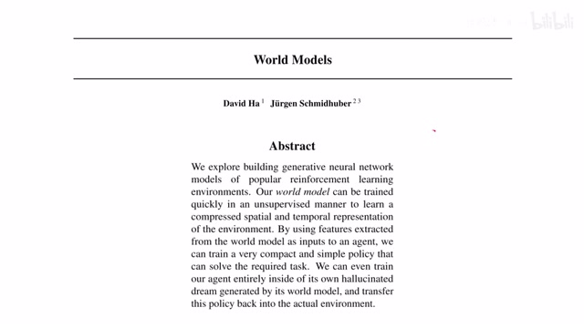
00:00:00–00:00:24 · 画面 001大家好,今天我们来介绍 World Models 这篇论文是 18 年的论文是一篇非常经典的使用生成式模型来帮助我们解决 Reinforcement Learning 中这个 Data Efficient 比较低的问题本文的核心思想是通过训练一个 LSTM 来预测系统未来的 Latent Representation 或者说是我们系统未来的状态在有了这种预测的基础上我们就可以通过非常简单的 Linear Model
00:00:24–00:00:35 · 画面 002
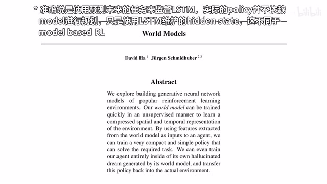
00:00:24–00:00:35 · 画面 002规模非常小的一个 policy 来取得相对满意的 reinforcement learning 的结果那么在今天的视频中呢我们会首先介绍和 model based reinforcement learning 或者说是 dreamy 相关的论文然后呢就是本文提出的 vision memory and controller 它这三个模块组合是形成的一个框架能够非常高效的解决测试环境的问题那么在介绍完这些模型之后呢我们会介绍
00:00:35–00:01:10 · 画面 003
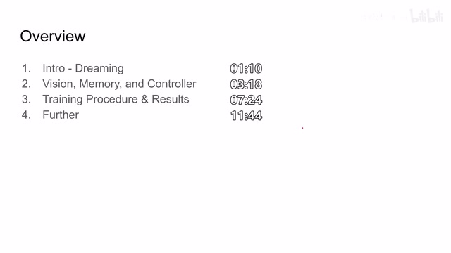
00:00:35–00:01:10 · 画面 003怎么样逐步的去训练这一整个模型及作者汇报的结果那么最后呢是在现有的模型基础上我们能对它进行怎样的改进好的首先我们来看 Dreaming 这个问题 Dreaming 的核心思想呢就是我训练一个 model 来去预测这个世界的状态它未来的变化那么为了能预测这个世界未来状态的变化呢我就希望这个 model 能尽量理解到
00:01:10–00:02:04 · 画面 004
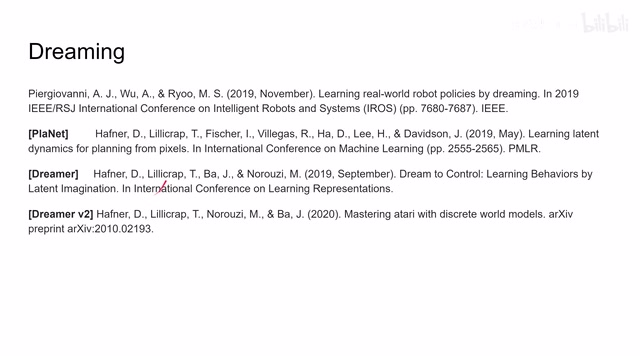
00:01:10–00:02:04 · 画面 004这个世界内在运行变化的规则在这里呢假如说我们是 vision based reinforcement learning 那么我们的 agent 接触到的世界呢就是一幅幅图像那么我们的 model 呢就需要预测说这个图像它在未来下一帧应该是什么样子的当然预测未来的整幅图像预测到像素级别的还原这个是非常困难的而且其实呢也是没有必要的我们呢其实更在意在我们现有的图像中如何提取一个好的 representation 而这个 representation 呢能够反映出世界的状态那么我们来看这里列了四篇论文第一篇呢我愿意称之为 dreaming model 然后这个呢是 planet 然后剩下两个呢是 dreamer 这些论文的核心思想呢都是通过 unsupervised 的方法学到一个好的 latent representation 然后呢我再维护一个模型
00:02:04–00:02:10 · 画面 005
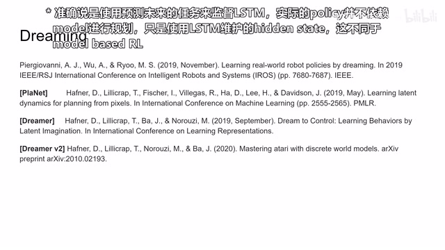
00:02:04–00:02:10 · 画面 00500:02:10–00:03:18 · 画面 006
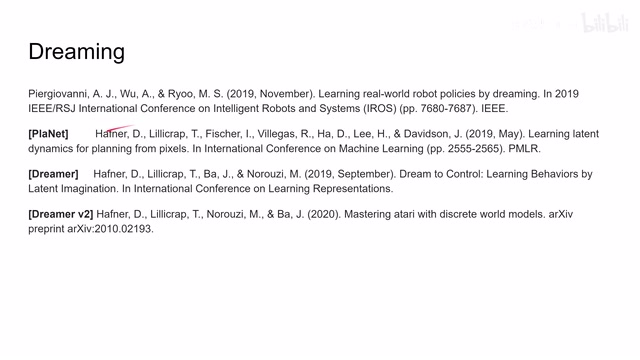
00:02:10–00:03:18 · 画面 006在预测未来的 Latent Representations 那么这个预测未来的模型呢就能学到世界的 Dynamics 就是世界的运行的规则具体来看在第一篇这篇论文里面它是一个纯 CNN 加 MLP 的这么一个构造它甚至没有用到 Recurrent Network 它实现了对未来的预测然后呢使我们的 Agent 完全在我们学好的这个 Model 里面进行 Training达到了一个 data efficiency 非常高的与环境交互非常少的满意的结果那么剩下的这几篇呢比如说 Dreamer 我们之前介绍过 Dreamer 2 它们内部呢都会维护一个类似 LSTM 这样的对于序列状态有记忆的网络来预测未来为我们的 reinforcement learning 提供规划等等等等那么非常推荐感兴趣的朋友呢把这些论文呢都看一遍是相关的需要呢我们也考虑介绍一下
这上面的三边工作那么来到本文本文提出的 agent model 呢它包含三个部分第一部分呢就是 vision 我们需要一个好的 latent representation 那么我就需要一个好的 encoder 把前面的视觉的这些原始的视觉图像来变换成一个好的 latent representation 同时呢我们需要有 memory 就是在有了好的 latent representation 在有好的 encoder 之后我们来去记忆过去发生了什么
00:03:18–00:04:52 · 画面 007
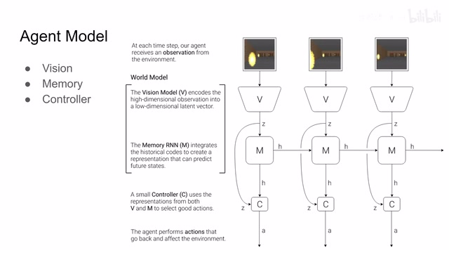
00:03:18–00:04:52 · 画面 007然后基于这些记忆去预测未来会发生什么那么有了这些过去的记忆有了对未来的预测还有我们当前的这个信息我们呢就可以再训练出一个 controller 这个 controller 呢就是通过对我们当前的视觉以及对我们过去的记忆把它们结合起来形成一个 action 形成一个 policy 来实现 reinforcement learning 的过程那么对于右边的这个图我们来看在第一个时刻我们的图像进入了 vision 的环节Vision 会给我们提出一个 Z，这个叫 Latent Representation 或者是叫 Encoder 过后的对我们图像的一个编码，我们把这个 Z 一是送到这个 Controller 里面，二是送到我们的这个 Model 里面，这个 M 内部维护一个 Hidden State，那么这个 Hidden State 包含对原来我们过去所有发生的事情的记忆的编码，那么再结合当前的 Observation 我们就可以对未来的 Hidden State 做一个预测
那么这个 h 呢就是预测过后送到下一个状态的这个 hidden state，然后呢我们再把这个 hidden state 同时也可以放到我们的 controller 里面，那么我们的 controller 呢结合过去的记忆 hidden states 结合当前的 representation 就可以获得一个 action，也就是形成我们的 policy，那么具体来看每一个部分 vision 的部分呢很好理解就是一个 vae，那么原始图像进来
00:04:52–00:04:56 · 画面 008
00:04:52–00:04:56 · 画面 00800:04:56–00:04:58 · 画面 009
00:04:56–00:04:58 · 画面 00900:04:58–00:05:01 · 画面 010
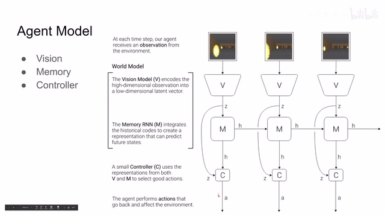
00:04:58–00:05:01 · 画面 01000:05:01–00:05:06 · 画面 011
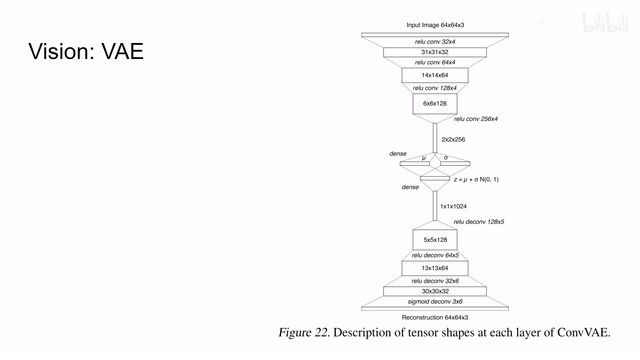
00:05:01–00:05:06 · 画面 01100:05:06–00:05:08 · 画面 012
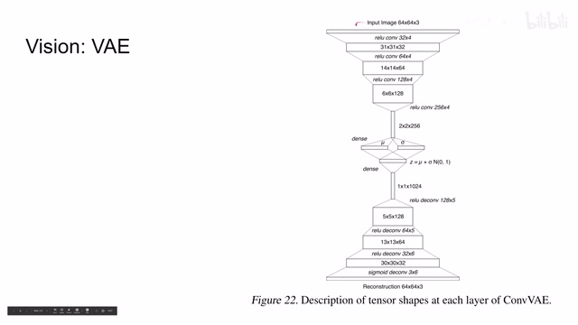
00:05:06–00:05:08 · 画面 012一层两层三层四层 convolutional layers 然后呢变成这个 Milk 和 Sigma 给它们进行采样采样得到一个 ZZ 再通过 deconvolution 一层两层三层四层最后 Sigma 重建出来我们的图像这个相信大家都非常熟悉了那么 Memory 呢这里作者使用的是 Mixture Density Network 和 Recurrent Neural Network 他们的组合那么更具体来说呢是这个混合高斯模型加长短时记忆网络 LSTM
00:05:08–00:05:21 · 画面 013
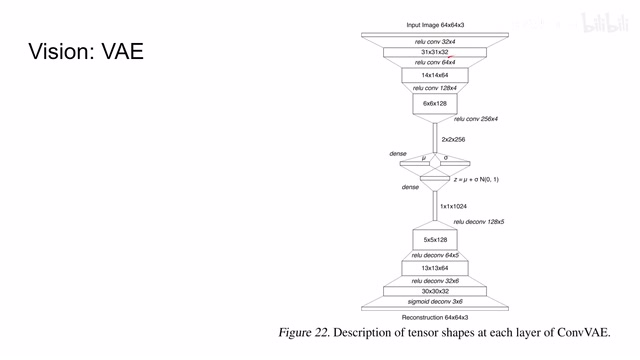
00:05:08–00:05:21 · 画面 01300:05:21–00:05:22 · 画面 014
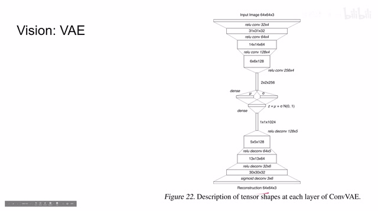
00:05:21–00:05:22 · 画面 01400:05:22–00:05:23 · 画面 015
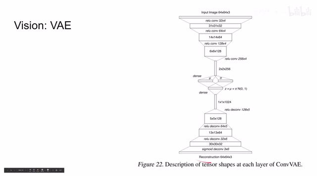
00:05:22–00:05:23 · 画面 01500:05:23–00:05:26 · 画面 016
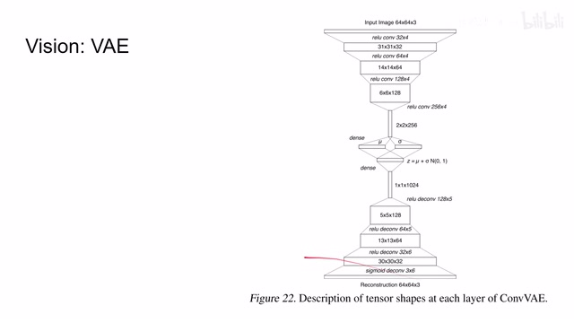
00:05:23–00:05:26 · 画面 01600:05:26–00:06:03 · 画面 017
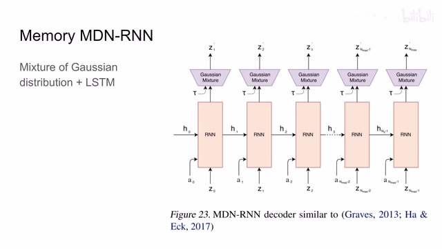
00:05:26–00:06:03 · 画面 017那么这个 memory 的作用呢就是我们一开始维护一个 hidden state h 然后呢我们有每一帧有 action 有 observation 通过这个时刻的两个输入呢我们去更新下一个时刻的 hidden state 也就是这个 h 那么同时呢我们再根据我们的这些输入加上这个高斯混合模型来预测出下一个时刻的 z 也就是我们对未来的 latent representation 的预测那么这里呢我们还有一个 top
00:06:03–00:06:20 · 画面 018
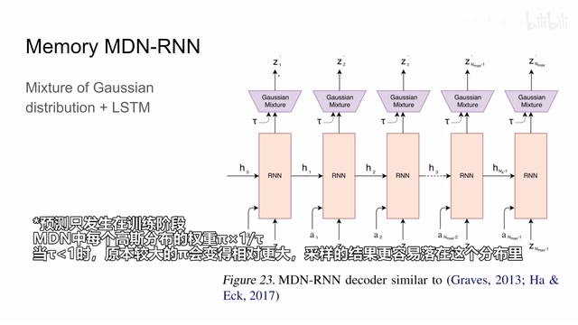
00:06:03–00:06:20 · 画面 018这个套呢我们称之为 temperature，它呢是用来控制我们预测这个 z 的时候太阳的分布，也就是说如果这个套越高，那么我对未来的预测呢也就更加随机化更加离谱一些，那么再来到 controllercontroller 就是非常简单的一层 linear layers，那么注意他这里拿到了一个是当前的 observation z，一个是当前的 hidden state h，那么就一个 linear layer
00:06:20–00:06:22 · 画面 019
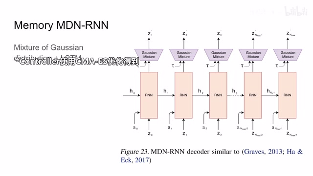
00:06:20–00:06:22 · 画面 01900:06:22–00:06:35 · 画面 020
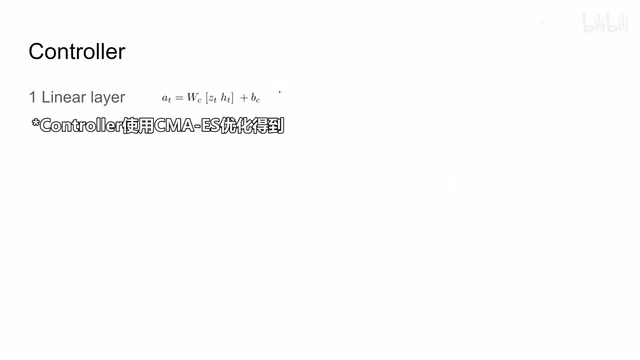
00:06:22–00:06:35 · 画面 02000:06:35–00:07:24 · 画面 021
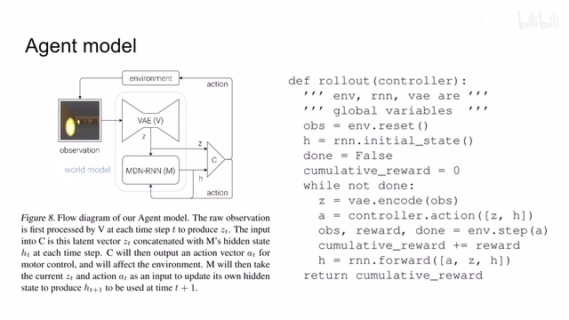
00:06:35–00:07:24 · 画面 021好的现在呢那么我们就可以把这些 model 组合起来了我们的环境给了我们 agent 一个图像那么这个图像呢经过我们的 vae 得到一个 z 也就是 latent representation 把这个 z 和之前的这个 action 放到我们的这个 memory 里面这个 memory 呢帮我们更新了我们的 hidden state h 把这个 hidden state 加上这个 z 一起送到这个 controller 里面 controller 呢会帮我们提供一个 action
这开始就交到我们的环境里面做下一步的迭代那么这里是这个模型运行起来时候的伪代码那么现在我们有了这样一个模型我们应该怎么去训练它呢其实我们可以看到这几个部分它们在训练的过程中是各不相关的也就是说我们可以逐个的去训练它们
00:07:24–00:08:53 · 画面 022
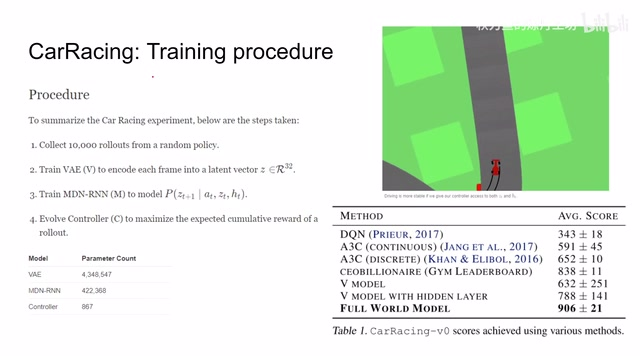
00:07:24–00:08:53 · 画面 022那么我们以 Car Racing 这个环境来做举例首先我们通过随机的一个 Policy来收集然后这些样本之后呢我们首先要训练一个好的 latent representation也就是我们的 VAE Vision 这一部分那么我们只需要把所有拿到样本里面的图像来过我们的 VAE通过一个 unsupervised 的方法我们就可以学到一个好的 latent representation这里呢作者用了一个长度为 32 的 vector那么有了这个好的 latent representation 呢
我们就可以在之前的 latent representation 的基础上对 RN 进行操作我们把之前样本中用所有的图像全部变成 latent representation全部变成这个 z然后呢我们把这个 action 也拿出来action 加上 z加上我们一开始维护的 hidden state把他们作为这个 rnn 的输入让 rnn 去预测下一个状态的 latent representation z z t plus 1这样我们就能得到一个好的 rnn它可以有效的把这些 action 啊
observations 啊整合到我们之前的 memory 当中然后呢看到 control Ctrl 呢这里我们使用 CMA-ES 也就是一种最优化的方法因为只有一层 linear layer 我们就可以把它作为一个最优化的问题它的输入呢就是这个 linear layer 中的所有的 parameters 它的输出呢就是这个 policy 在我们的这个环境中得到了累积的这一个积分那么我们找到能使这个积分变得最大的 policy 也就是我们想要的 policy 那么这里呢作者列出了几种实验的对比
00:08:53–00:09:10 · 画面 023
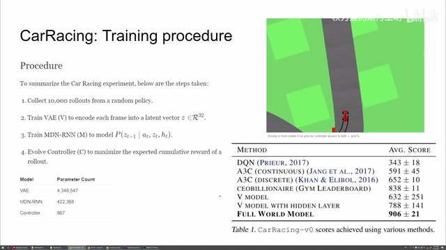
00:08:53–00:09:10 · 画面 023像 DQN A3C 都是经典的 reinforcement learning 的方法这个方法是当时榜上得分最高的方法当然这个方法是一个网友他传上去的也没有介绍他具体怎么实现的那么除了本文提出的整个 world model 之外那么作者还对比了如果我不把 hidden state 放到我们的 controller 里面我们只把这个 vision 放到 controller 里面它的结果
00:09:10–00:09:11 · 画面 024
00:09:10–00:09:11 · 画面 02400:09:11–00:09:13 · 画面 025
00:09:11–00:09:13 · 画面 02500:09:13–00:09:15 · 画面 026
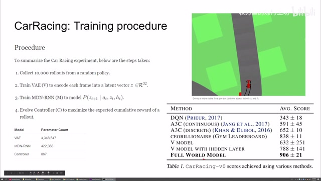
00:09:13–00:09:15 · 画面 02600:09:15–00:09:22 · 画面 027
00:09:15–00:09:22 · 画面 02700:09:22–00:09:23 · 画面 028
00:09:22–00:09:23 · 画面 028还有我甚至在 controller 里面再加一层但是呢它还是只能看到 vision 那么它的结果那么从这个性能上可以看出来整个这个 hidden statehidden model 这个 lstm 这些 memory 这些东西对于我们的性能的表现是非常重要的好的在刚刚我们看到我们的 world model 是可以预测未来的 this representation 的那么作者就想了那么既然这个 world model 能够反映世界的一些 dynamics
00:09:23–00:09:40 · 画面 029
00:09:23–00:09:40 · 画面 02900:09:40–00:11:36 · 画面 030
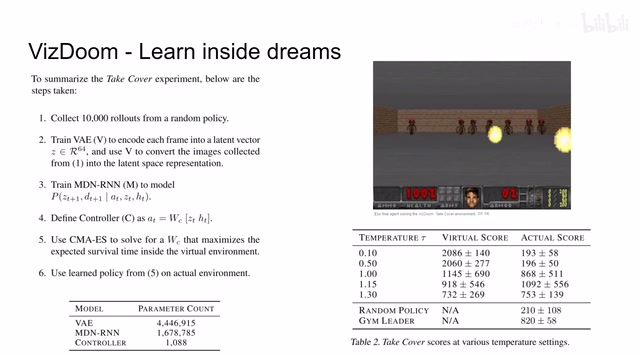
00:09:40–00:11:36 · 画面 030那我能不能只依赖于这个 world model 来进行训练呢那当然当然是也是可以的这里呢作者用这个 VizDoom 这个环境那么具体的这个任务呢就是 take cover 也就是闪避这些子弹说像刚才一样我们先训练 VAE 再训练这个 world model 之后呢我们定义好 controller 之后不再在真实的环境中进行训练而是直接在我们的这个 world model 里面进行训练也就是一个我们叫 dreaming 的过程那么相对于之前我们只需要对未来的 latent representation 进行预测这里呢我们的 model 还需要告诉我们什么时候这个 episode 停止了什么时候呢这一趟运行是结束了所以呢这里我们可以看到这个 world model 呢多了一个这个 d 这个 d 呢就是告诉我们什么时候这个 model 结束了这个 agent 的失败那么在训练好这样一个 controller 之后呢我们再把它放到真实的环境来运行
这里呢作者就发现不同的 Temperature 对这个训练结果的影响其实是非常明显的当 Temperature 比较低的时候呢我们的 World Model 生成的模型呢它相对的变化呢没有那么大那么这个时候呢对于我们的 Controller 来说它是非常好训练的所以呢在它的虚拟的环境的训练当中在它做梦的过程中它得分是很高但是呢一旦拿到真实的环境中在真实的环境中我们可能会进入到很多不同的状态所以呢但实际上这样的得分呢就相对比较低了那么通过随着这个 temperature 的增加那么随着 temperature 的增加这个虚拟环境的复杂困难程度愈发增加对于 controller 的训练越来越困难但是呢我们的 controller 呢在实际环境中呢表现呢是逐渐变好的当然了也不能一直的这样增加下去那么对比 random policy 对比 leaderboard 那么本文听说方法是 outperform
00:11:36–00:11:40 · 画面 031
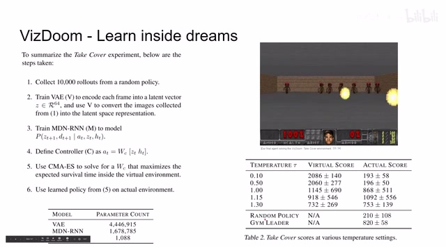
00:11:36–00:11:40 · 画面 03100:11:40–00:11:42 · 画面 032
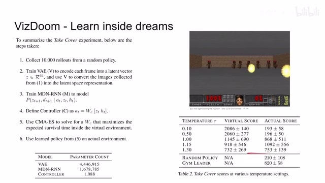
00:11:40–00:11:42 · 画面 032对吧？肯定是 outperform 这些方法。那么在刚刚的实验中呢，我们也提到了这 temperature 的变化对于我们 model 的多样性的变化对于这个环境的影响是非常明显的。那么我们也注意到了说，很有可能在一开始我们使用 random policy 的时候，有很多状态我们是没有踩到的。
00:11:42–00:11:44 · 画面 033
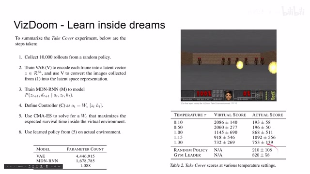
00:11:42–00:11:44 · 画面 03300:11:44–00:12:11 · 画面 034
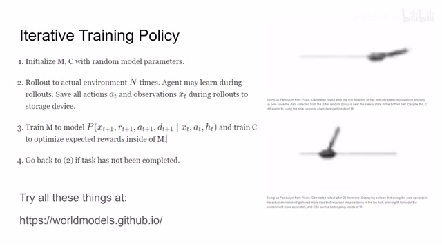
00:11:44–00:12:11 · 画面 034对于这些没有采到的状态呢，我们的 model 呢是很难学到一个有意义的这个 dynamics。那么很自然而然的作者就想到，如果说我第一次使用的这个 random modelrandom controller 这 random policy 他采到样本学到的 model 呢不够好。但是呢，经过了第一轮迭代我们有了一个相对改善的 model 相对改善的 policy 这个 controller。那么呢我们就可以。
00:12:11–00:12:12 · 画面 035
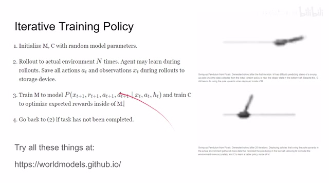
00:12:11–00:12:12 · 画面 03500:12:12–00:12:17 · 画面 036
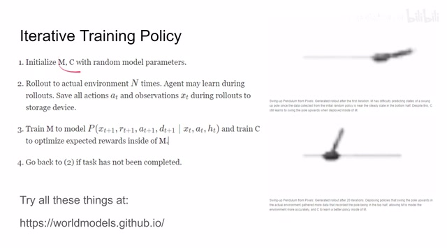
00:12:12–00:12:17 · 画面 03600:12:17–00:12:18 · 画面 037
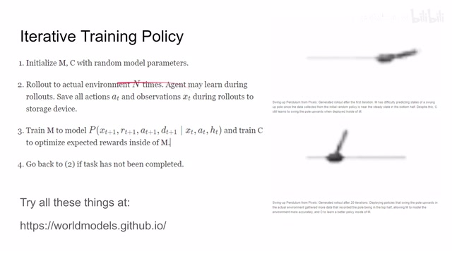
00:12:17–00:12:18 · 画面 03700:12:18–00:12:48 · 画面 038
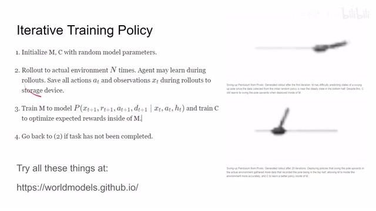
00:12:18–00:12:48 · 画面 038倒回去再用这个改进的这个 model 改进的 controller 进行采样采集更多新的样本这个时候呢会采到更多的状态然后这样一遍一遍的去训练那么这里作者举了这个 swing up pendulum 也就是把这个倒立摆这个棍子从底下甩上来这么一个过程那么在这个任务里面第一次随机的策略是学不到棍子甩上来的状态那么在经过 20 轮之后呢终于这个 model 学会了怎么样把这个棍子甩上来
00:12:48–00:12:50 · 画面 039
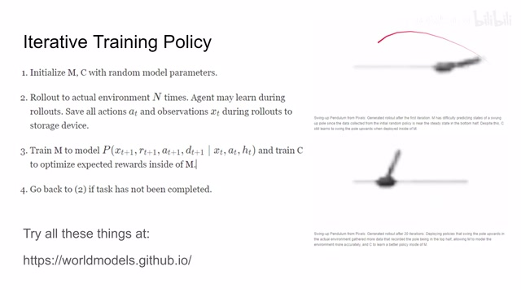
00:12:48–00:12:50 · 画面 03900:12:50–00:13:06 · 画面 040
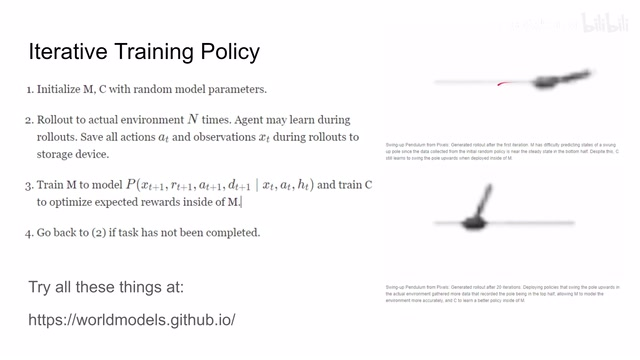
00:12:50–00:13:06 · 画面 040那么以上呢就是这篇论文的主要内容。在当时的视角来看，这篇论文的提议是非常非常新颖的。然后呢，同时这里呢作者还有一个网站，你可以通过这个网站呢去交互的来观察，比如说一个 latent vector 中的每一个 element 是如何影响 world model 的变化的是如何影响我们 reconstructed images。
00:13:06–00:13:08 · 画面 041
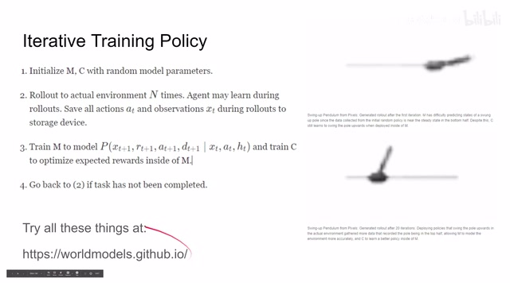
00:13:06–00:13:08 · 画面 04100:13:08–00:13:10 · 画面 042
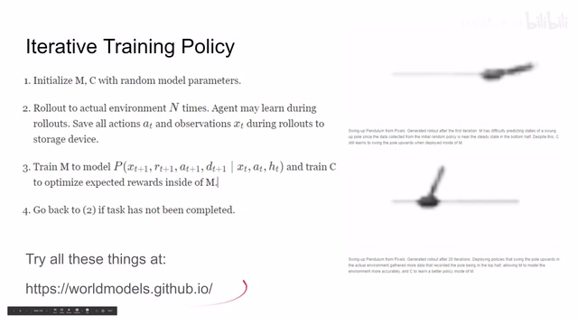
00:13:08–00:13:10 · 画面 04200:13:10–00:13:11 · 画面 043
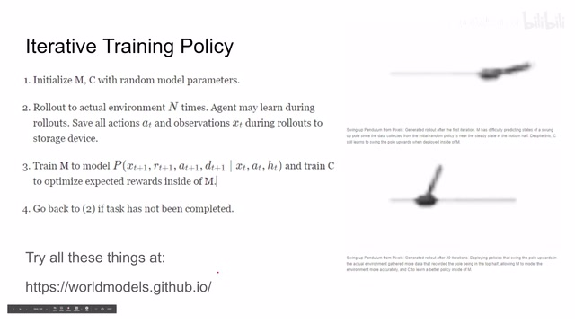
00:13:10–00:13:11 · 画面 04300:13:11–00:13:27 · 画面 044
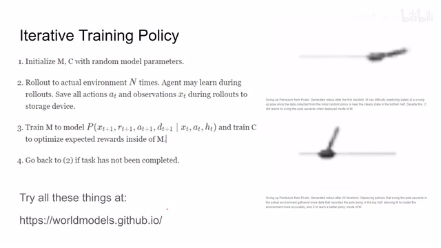
00:13:11–00:13:27 · 画面 044他就是我们重建后的图像他的变化了。作者的这个交互包括对整个论文的介绍，在这个网站上是有非常详细的资料的。那么感兴趣的朋友呢也非常推荐你去查看。好的，那么以上就是我对这篇论文的简单的分析。那么感谢您的收看，再见。
00:13:27–00:13:29 · 画面 045
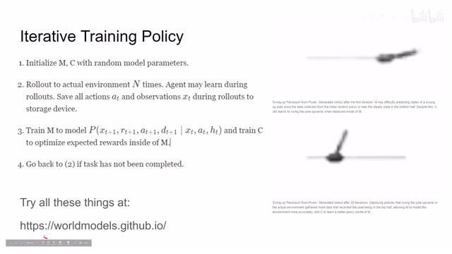
00:13:27–00:13:29 · 画面 04500:13:29–00:13:30 · 画面 046
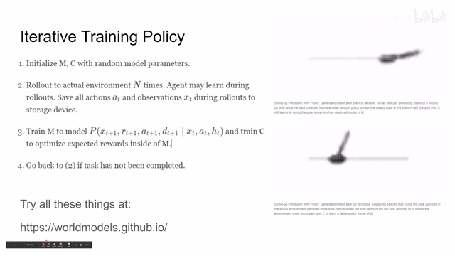
00:13:29–00:13:30 · 画面 04600:13:30–00:13:39 · 画面 047
00:13:30–00:13:39 · 画面 047转写与来源说明 · 2 个自动复核提示
保留 72 个原始语音片段，2 个片段触发自动复核提示。提示仅用于定位可能的术语、重复或识别问题，不等于已确认错误。
讲解画面为源视频截图（640×360），不是可编辑 PPT 文件。全片按每秒 2 帧扫描内容变化，逐步展开页保留；连续动画保留代表画面。清晰度受源视频限制。
原视频：paper/合集_2026-10-16_机器人学/[论文简析]World Models[1803.10122].mp4
SHA-256：43c54a43f2c574448532e2044c34bb20516cafcfa1d574dcaa22ba3d6028a7a9
好的 latent representation
好的 latent representation 呢
全文按视频语音与画面制作。原论文可从上方链接下载；完整资料包保留全文、原始逐字稿、字幕和校对记录。